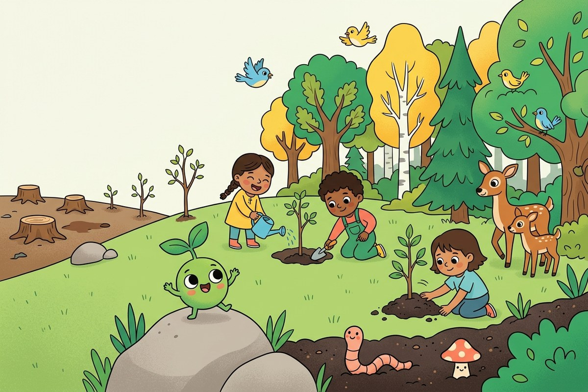

大きな秘密

自然は自分で治す方法を知っています。邪魔をせずに手伝うだけでいいのです。
木を切ったら新しく植えられます。土が疲れたらミミズやキノコや根がもっと豊かにしてくれます。地球は空っぽになる箱ではなく、お世話をすれば育つ生きている庭です。
GreenWarの考えはとてもシンプル：ものを作るときはいつも、作ったあとの方が自然が豊かになるべき。これを「共生（きょうせい）」と呼びます。ハチとお花のように助け合うことです。
ペパンより：共生はきみと大親友のようなもの。お互いを強くし合えるんだ。人間と地球もまったく同じことができるよ！